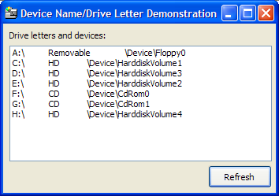

Device Names Sample (9K)
Device Names Sample (9K)
 2 Jun 2004
2 Jun 2004
First Posted

Mapping NT Device Names to Drive Letters and vice-versa
This tip demonstrates how you convert between MS-DOS style drive letters and NT-style device names. This can be useful if you're working with an API that exposes an NT device name, such as IMAPI for CD Burning.
About Device Names
Under Windows NT, devices like hard disks, serial ports have an internal Windows NT name typically of the form \Device\[Name][Number]. These can optionally be mapped by the Windows NT Object Mapper onto the legacy MS-DOS style drive letters like A:, C:, LPT1: etc. Programs typically cannot use the device names directly, but you can map to and from the device name and mapped names using the code presented here.
Device Name Functions
There are two functions used in this sample:
- QueryDosDeviceW
Takes a DOS-style name and returns the NT device name. - GetLogicalDriveStringsA
Returns the list of all drive strings present on the system.
QueryDosDevice takes the DOS name, without the trailing backslash, and puts the equivalent device name into a buffer. The buffer is terminated with two trailing nulls (the reason for this is that the lpDeviceName parameter can be set to null, in which case all device names are returned in a null delimited list). The following code demonstrates how to use the function in VB:
Private Declare Function QueryDosDeviceW Lib "kernel32.dll" ( _
ByVal lpDeviceName As Long, _
ByVal lpTargetPath As Long, _
ByVal ucchMax As Long _
) As Long
Private Const MAX_PATH = 260
Public Function GetNtDeviceNameForDrive( _
ByVal sDrive As String) As String
Dim bDrive() As Byte
Dim bResult() As Byte
Dim lR As Long
Dim sDeviceName As String
If Right(sDrive, 1) = "\" Then
If Len(sDrive) > 1 Then
sDrive = Left(sDrive, Len(sDrive) - 1)
End If
End If
bDrive = sDrive
ReDim Preserve bDrive(0 To UBound(bDrive) + 2) As Byte
ReDim bResult(0 To MAX_PATH * 2 + 1) As Byte
lR = QueryDosDeviceW(VarPtr(bDrive(0)), VarPtr(bResult(0)), MAX_PATH)
If (lR > 2) Then
sDeviceName = bResult
sDeviceName = Left(sDeviceName, lR - 2)
GetNtDeviceNameForDrive = sDeviceName
End If
End Function
There is no direct function to perform a reverse mapping (i.e. determine a DOS drive name from an NT device name). However, you can do the same thing by looping through the attached drives and getting the device name for each one. Strangely VB does not include a means of listing drives (although I suppose you could use the shell scripting object or even the DriveListBox control) but the list isn't hard to get with the GetLogicalDriveStrings function. This takes a buffer and fills it with a null-delimited list of drive names, completing the list with two terminating nulls. Calling the function with a null buffer causes it to return the size of the buffer needed to hold the entire list:
Private Declare Function GetLogicalDriveStringsA Lib "kernel32" ( _
ByVal nBufferLength As Long, lpBuffer As Any) As Long
Public Function GetDrives() As Collection
Dim colDrives As New Collection
Dim lSize As Long
Dim lR As Long
Dim iLastPos As Long
Dim iPos As Long
Dim sDrive As String
Dim sDriveStrings As String
lSize = GetLogicalDriveStringsA(0, ByVal 0&)
sDriveStrings = String(lSize + 1, 0)
lR = GetLogicalDriveStringsA(lSize, ByVal sDriveStrings)
iLastPos = 1
Do
iPos = InStr(iLastPos, sDriveStrings, vbNullChar)
If Not (iPos = 0) Then
sDrive = Mid$(sDriveStrings, iLastPos, iPos - iLastPos)
iLastPos = iPos + 1
Else
sDrive = Mid$(sDriveStrings, iLastPos)
End If
If Len(sDrive) > 0 Then
colDrives.Add sDrive
End If
Loop While Not (iPos = 0)
Set GetDrives = colDrives
End Function
Using this list we can get the device name for a drive just by looping through the drive list until there's a match:
Public Function GetDriveForNtDeviceName( _
ByVal sDeviceName As String) As String
Dim sFoundDrive As String
Dim colDrives As Collection
Dim vDrive As Variant
For Each vDrive In GetDrives()
If (GetNtDeviceNameForDrive(vDrive) = sDeviceName) Then
sFoundDrive = vDrive
Exit For
End If
Next
GetDriveForNtDeviceName = sFoundDrive
End Function
Wrap Up
This sample demonstrates how to map to and from NT Device names and the equivalent drive letters under Windows NT. This function is normally not needed, but can be useful when working with an API that works at this level, for example the IMAPI.